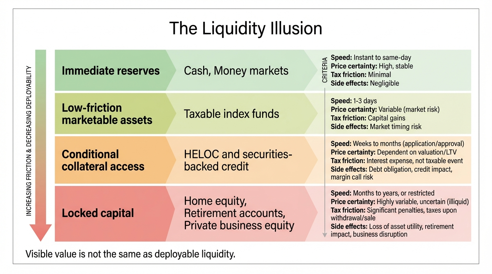
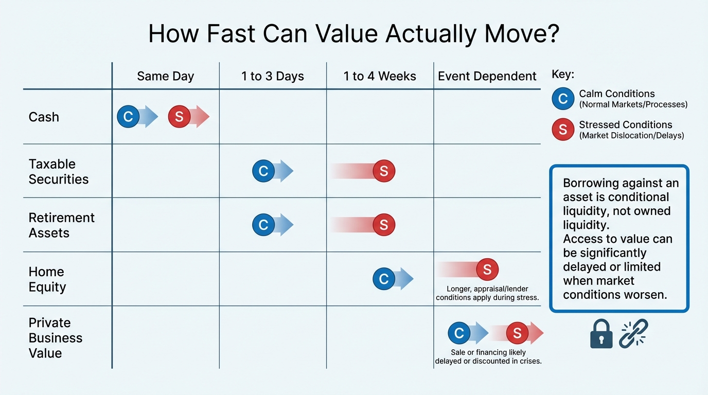

The Liquidity Illusion
Most households do not confuse income with wealth anymore. They now make a more subtle mistake. They confuse visible account value with deployable liquidity. Those are not the same thing. A brokerage balance, a retirement account, home equity, a private business stake, and a money market balance all look liquid on a dashboard. They do not all defend a household on the same timescale or under the same type of stress.
The illusion persists because modern financial interfaces flatten categories that should remain separate. Apps aggregate balances. Net-worth trackers combine cash, equities, home value, retirement accounts, and alternatives into one total. Credit products market collateral access as if collateral itself were already liquid. The result is a household that feels solvent until it has to move cash across time, tax, legal, and settlement boundaries under pressure.
Core thesis: liquidity is not a single property. It has at least four dimensions: conversion speed, price certainty, tax friction, and balance-sheet side effects. The liquidity illusion appears whenever a household treats market value or borrowing capacity as if it were immediate, low-friction spending power.

Why The Illusion Shows Up Even In Reasonably Comfortable Households
The Federal Reserve's 2025 report on household well-being showed that 63 percent of adults said they would cover an unexpected $400 expense using cash or its equivalent, and 54 percent said they had set aside three months of expenses in a rainy-day fund. Those are not catastrophic numbers, but they do mean a large minority still lacks immediate liquidity for modest or moderate stress. This matters because the United States just went through years in which paper asset values, home equity, and account balances all received heavy psychological attention.
The 2022 Survey of Consumer Finances adds a second layer. Transaction accounts were held by almost all families, and the conditional median balance rose to $8,000. That sounds healthier than older balance-sheet narratives would suggest. It still does not mean most households are safely liquid. Eight thousand dollars is not much against job loss, family travel, legal costs, uninsured healthcare, or a forced housing move in a high-cost metro. Median balances describe holdings, not stress durability.
The older Federal Reserve note on liquid savings remains useful here because it frames the issue correctly. Liquid savings exist to handle unexpected expenses and income disruption without immediately forcing borrowing or missed payments. The key point is not whether a family has assets in aggregate. It is whether enough of those assets are accessible in the right form when the shock arrives.
Quoted Liquidity Is Not The Same As Spending Liquidity
Cash and near-cash holdings are genuinely liquid. Most other balance-sheet categories only approximate liquidity. Public equities can usually be sold quickly, but price is uncertain and taxes may be real. Retirement assets are visible wealth, but they are not neutral liquidity if access creates penalties, bracket effects, or long-run drawdown damage. Home equity is collateral, not cash. Margin capacity is conditional liquidity that can disappear when markets or income conditions worsen. Private business value may be economically meaningful and operationally unusable at the exact moment the household needs funds.
This distinction sounds obvious in theory and gets ignored in practice because statement interfaces compress it. A household sees seven figures across accounts and feels liquid. Then the actual question arrives. Can this balance sheet fund six months of full spending, a move, a parent-care emergency, and two quarters of lower income without forced selling, expensive borrowing, or structural damage to the long-duration portfolio? The answer is often no.
The Richmond Fed's review of wealth distribution helps explain why. Mid-wealth households hold most of their wealth as real estate, while richer households hold larger shares in stocks and private business equity. Neither profile automatically solves liquidity. Real estate is slow and conditional. Private business wealth is event-dependent. Even diversified market portfolios become less liquid in functional terms when the owner is psychologically unwilling to sell into drawdowns or faces heavy realization costs.
Borrowing Against Assets Does Not Eliminate The Problem
One common response to the liquidity problem is to redefine collateral access as liquidity itself. This is the most expensive form of the illusion. A line of credit, securities-backed loan, or HELOC can be valuable. It is still not the same as owning unencumbered liquid reserves. Borrowing creates a second balance-sheet event. The household may solve the immediate cash need while worsening future fixed claims, sequence risk, and refinancing dependence.
This distinction becomes sharper when interest rates are not negligible. Cheap-money periods encouraged the belief that almost any appreciating asset could be turned into flexible liquidity on demand. Higher-rate regimes force the hidden cost back into view. Accessing value through debt now has a visible carrying cost, and the spread between asset appreciation assumptions and borrowing reality gets harder to ignore.
That is why collateral-based liquidity should be treated as a separate layer. It is not fake. It is conditional and reversible. If income weakens, underwriting changes, spreads widen, or collateral value falls, the liquidity path changes when the household needs it most. That asymmetry is exactly what an emergency reserve is supposed to avoid.

The Real Test Is Optionality Under Stress
The best reason to care about liquidity is not emergency-fund orthodoxy. It is optionality. A liquid household can wait, negotiate, relocate, repair, retrain, help family, or buy time. An illiquid household, even a nominally wealthy one, makes decisions under deadline. That deadline converts portfolio design into life architecture. People accept weaker job terms, worse housing choices, and lower strategic freedom because value is trapped behind timing barriers.
This is where the liquidity illusion overlaps with several other structural traps on WealthMeter. The career optionality gap often begins as a cash-runway problem. The mortgage lock-in trap becomes more binding when home equity is mistaken for flexible capital. The asset-rich, cash-poor paradox is one visible expression of the same system failure. The liquidity illusion is the broader diagnostic frame that sits above them.
How To Measure Liquidity More Honestly
- Separate immediate liquidity from market liquidity. Cash and near-cash should not be grouped with taxable equities, even when both can be accessed within days.
- Apply friction haircuts. Discount taxable portfolios for capital-gains cost, retirement accounts for penalties or future-plan damage, and collateral-based access for interest and covenant risk.
- Measure months of full-spend defense. Use actual household outflow, not a symbolic emergency number.
- Create a stressed-state conversion table. Ask what each major asset looks like if markets fall, work income weakens, and underwriting tightens at the same time.
- Distinguish owned liquidity from rented liquidity. Cash reserves are owned. Lines of credit are rented. The difference matters.
A better balance-sheet report would therefore show at least four bands: immediate reserves, low-friction marketable capital, conditional collateral access, and locked or event-dependent capital. Once those bands are visible, households usually discover that their usable defense layer is much smaller than the portfolio summary implies. That is not pessimism. It is more accurate planning.
Known, Inferred, And Unknown
| Category | Assessment |
|---|---|
| Known | A large minority of U.S. adults still cannot rely exclusively on cash or its equivalent for even a modest unexpected expense. |
| Known | The median transaction-account balance in the 2022 Survey of Consumer Finances was far below what many households would need for a major income interruption or relocation shock. |
| Known | Households across the middle of the wealth distribution hold a large share of wealth in real estate rather than in immediately spendable balances. |
| Inferred | Digital portfolio aggregation and collateral-based credit products make households more likely to overstate practical liquidity relative to true shock capacity. |
| Unknown | How much of the apparent rise in household financial comfort would remain after applying consistent liquidity, tax, and timing haircuts across real-world balance sheets. |
The Practical Correction
The corrective is not holding everything in cash. That would destroy real return. The corrective is matching liquidity layers to the shocks and strategic decisions a household actually faces. Cash handles immediacy. Diversified taxable assets handle medium-horizon flexibility. Retirement assets handle long-horizon solvency. Home equity and private business value support strategic wealth, not routine defense. Confusing these layers is what creates the illusion.
That distinction is unglamorous, which is why it is so often skipped. But once the household starts measuring liquidity by timing, side effects, and optionality, the planning conversation improves immediately. The question changes from "How big is the balance sheet?" to "Which part of the balance sheet can buy time without creating a second problem?" That is the number that governs real resilience.
Further Reading Inside The Site
This article connects directly to The Asset-Rich, Cash-Poor Paradox, The Career Optionality Gap, and The Mortgage Lock-In Trap. Those pieces describe three common ways the liquidity illusion turns into weaker decision freedom.
Source List
Board of Governors of the Federal Reserve System. Report on the Economic Well-Being of U.S. Households in 2023: Expenses. Published May 2024.
Board of Governors of the Federal Reserve System. Report on the Economic Well-Being of U.S. Households in 2024: Savings and Investments. Published May 2025.
Bhutta N, Dettling LJ. Money in the Bank? Assessing Families' Liquid Savings Using the Survey of Consumer Finances. Federal Reserve FEDS Notes. 2018.
Board of Governors of the Federal Reserve System. Changes in U.S. Family Finances from 2019 to 2022. Published October 2023.
Jones J, Neelakantan U. Portfolios Across the U.S. Wealth Distribution. Richmond Fed Economic Brief. 2023.